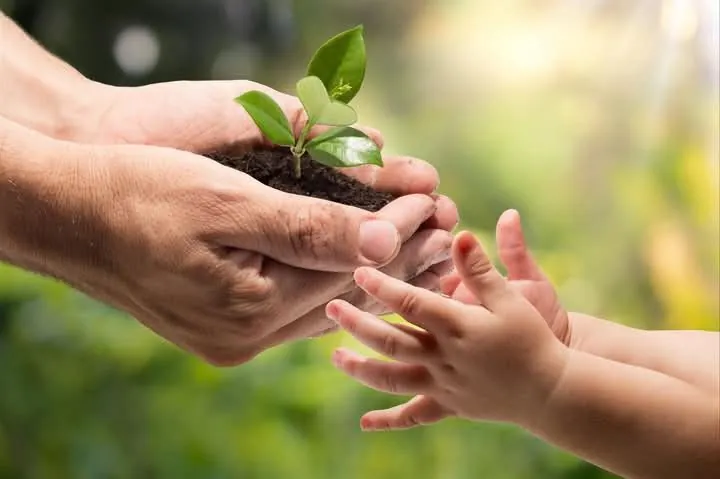
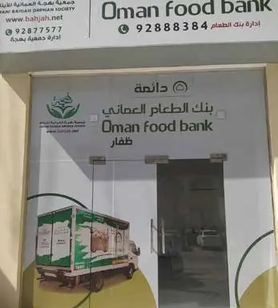
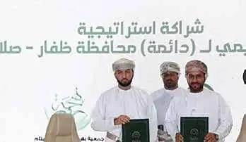
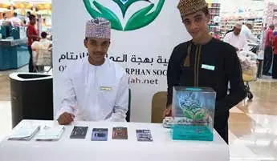

Orphan sponsorship — monthly allowance
25OMR / month
- A core programme of the Society
- Online payment on the official website
- Paid via the orphan's account or electronic card
- Minimum period: one full year
A monthly sponsorship through the Omani Bahjah Orphan Society gives an orphan regular support every month, within programmes that care for their education, health and food.
Pay on the Society's official website by credit or debit card (Bank Muscat SmartPay gateway). The official website is in Arabic.

The Omani Bahjah Orphan Society provides care and assistance to orphans inside and outside their homes through its core programmes. Its goal is to give them hope for a secure future and better opportunities, and to help every child in its care grow up psychologically and socially healthy.
Orphan sponsorship is a core programme of the Society. You commit OMR 25 per month, paid to the orphan as a monthly allowance through their own account or electronic card, protecting their confidentiality and privacy.
“I and the one who looks after an orphan will be in Paradise like this.”
The Prophet ﷺ, pointing with his index and middle fingers
Bahjah directs its care for orphans through documented core programmes:
A monthly allowance of OMR 25 for the orphan, paid through their own account or an electronic card.
Covered directly by your sponsorship
An electronic food-ration card for the family, under the “Salary and Food Supply Sponsorship” programme.

Kindergarten and early grades, strengthening lessons, sponsorship of students after secondary school, and the school-bag project.
Coordination with government bodies and private hospitals, follow-up of treatment, and a special fund for emergency cases.

The “Food for Thought” programme builds the individual intellectually and psychologically through effective training courses.
The core sponsorship (OMR 25) is a monthly allowance for the orphan. Other programmes are funded by dedicated sponsorships and donations, according to the Society's profile.
The core sponsorship of OMR 25 per month for one orphan, or one of the other documented options.
On the official “Orphan Sponsorship Programme” page by card, through the Bahjah app, or with the bank deduction form.
The Society directs the support regularly through the orphan's own account or electronic card.
The minimum sponsorship period is one full year — according to the Society's published profile.
The Omani Bahjah Orphan Society was established on 10 February 2014 under Royal Decree No. 14/2000.
Historical 2023 statistics as stated in the Society's published profile; these are not current figures.
The Society protects the orphan's confidentiality and privacy, using their own account or an electronic card to pay financial and food support periodically. The Society states in its profile that it was the first charity in the Sultanate to offer this service.
 ISO certificate
ISO certificate Khalid Al-Essa Al-Saleh Award, Kuwait — Arab world level
Khalid Al-Essa Al-Saleh Award, Kuwait — Arab world level Honoured as best association by the Human Rights Commission
Honoured as best association by the Human Rights Commission Al Sanabel Award for Service Excellence in the GCC countries
Al Sanabel Award for Service Excellence in the GCC countries Sultan Qaboos Award for Voluntary Work
Sultan Qaboos Award for Voluntary WorkAs displayed by the Society on its official website, with the year of each.
Photos from the Society's activities and profile, and official news from its media centre (in Arabic).





Orphan sponsorship is a core programme of the Omani Bahjah Orphan Society. You commit a monthly amount that is paid to the orphan as a monthly allowance through their own account or electronic card.
The core sponsorship is OMR 25 per month for one orphan. The Society's profile states that the minimum sponsorship period is one full year.
The core sponsorship (OMR 25) is a monthly allowance for the orphan. Alongside it, the Society runs other programmes funded by dedicated sponsorships and donations, including food rations, educational care and healthcare (the Zamzam project).
Through the “Orphan Sponsorship Programme” page on the Society's official website: the Society accepts credit and debit cards via the Bank Muscat SmartPay gateway. You can also use the Bahjah app, or fill in the sponsor form and bank deduction form from the forms page. The official website is in Arabic.
Yes. The Bahjah app is available on Android and iPhone. You can use it to sponsor orphans, donate, and follow the Society's projects and urgent cases.
According to the Society's profile: food-ration sponsorship at OMR 35 per month per family, allowance and ration together at OMR 60, health sponsorship for the Zamzam project at OMR 10, and the school-bag project at OMR 15 per school-age orphan per semester. Other ways to give are on the donations page.
OMR 25 a month gives an orphan regular support and hope for a secure future.
Sponsor an orphan now